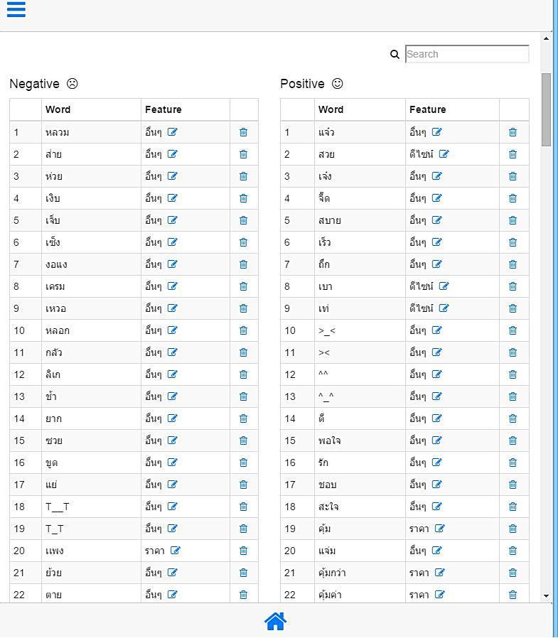
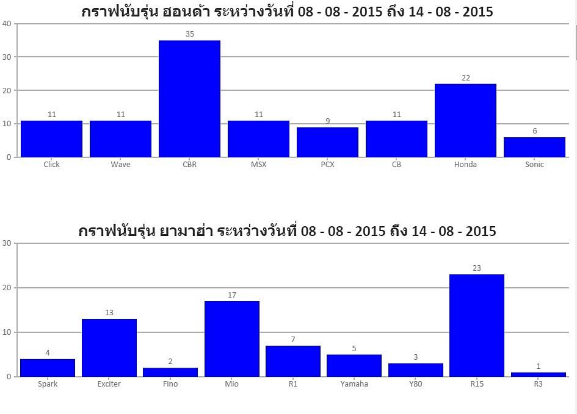

<style>
    .ban_style_nodejs{
        background-color: greenyellow;
    }
    .ban_white{
        color: black;
        background-color: white;
    }
    @media only screen and (min-width: 700px) {
        #nodeman1 {width: 75%;}
        #nodeman2 {width: 75%;}
        #nodeman3 {width: 75%;}
        #nodeman4 {width: 75%;}
        #nodeman5 {width: 75%;}
        #nodeman6 {width: 75%;}
        #nodeman7 {width: 75%;}

        .ban_style {
            padding-top: 10px;
            padding-bottom: 10px;
        }
        .ban_white {
            padding-top: 10px;
            padding-bottom: 10px;
        }
    }
    @media only screen and (max-width: 699px) {
        #nodeman1 {width: 100%;}
        #nodeman2 {width: 100%;}
        #nodeman3 {width: 100%;}
        #nodeman4 {width: 100%;}
        #nodeman5 {width: 100%;}
        #nodeman6 {width: 100%;}
        #nodeman7 {width: 100%;}
    }
</style>


<ion-view view-title="NodeJS">
    <ion-content overflow-scroll="true">
        <div class="rowly ban_style_nodejs">
            <div class="coly-1"></div>
            <div class="coly-10">
                <h2><b><span class="now_rap">Motorcycle Report</span></b></h2>
                <br/>

                <div class="story_text">
                    &nbsp;&nbsp;&nbsp;&nbsp; เป็นโปรเจคที่ทำให้อาจารย์ที่มหาวิทยาลัย เกี่ยวกับ
                    การวิเคราะห์ข้อมูลความพึงพอใจ (Sentiment Analysis) ของลูกค้าที่มี ต่อ Yamaha Honda เป็นหลักครับ
                    เอามาเปรียบเทียบ ดู ความพึงพอใจของแต่ละรุ่นของ มอเตอร์ไซค์ครับ (และเป็นงานแรกที่เริ่มศึกษา NodeJS ครับ เพราะโปรเจกก่อนหน้า เราใช้ LAMP โปรเจคนี้อยากลองเปลี่ยนมาใช้ MEAN ดูบ้าง)
                    <br/><br/>
                    <div align="center">
                        
                        
                        <br/>
                        <br/>(ในส่วนของการทำดาว ได้รุ่นน้องที่มหาลัยช่วยทำครับ ให้เครดิตน้องด้วย <span class="now_rap">น้องไอซ์ <a href="https://www.facebook.com/icestech" target="_blank">Facebook.com/icestech</a>)</span>
                        <br/><br/>
                        
                        
                        
                        
                    </div>
                    <br/><br/>
                    <b>ความรู้ที่ใช้ : </b>NodeJS , ExpressJS , Angular , Bootstrap , CanvasJS (Graph) , PhantomJS 
                    <br/><br/>
                    <b>ฐานข้อมูล : </b>MongoDB 3.0<br/><br/><br/><br/>
                </div>
            </div>
            <div class="coly-1"></div>
        </div>
    </ion-content>
</ion-view>

